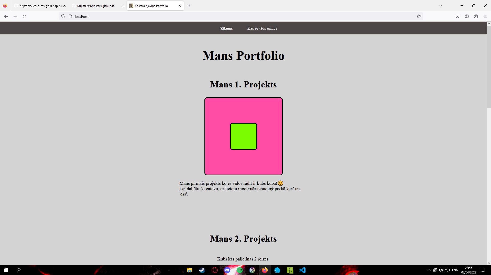

Mans 1. Projekts
Mans pirmais projekts ko es vēlos rādit ir kubs kubā!😊
Lai dabūtu šo gatavu, es lietoju 2 'div' elementus ar sakonfigurētiem
css stiliem.
Iekšējais kubs ir centrēts ar css-grid, bet abiem ir modificētas
krāsas/lielumi caur CSS. Vēl bija jāčakarējas ar z-indeksu lai
nestātos 'header' ceļā.
Mans 2. Projekts
Kubs kas palielinās 2 reizes.
Kubs kas pagriežas par 45 grādiem.
Kubs kas pārvietojas 100px pa labi un 50px uz augšu.
Kubs kas nokrīt uz savas labās malas.
Šito es dabuju gatavu ar 'div' elementiem, kuriem ir pieliktas
transformācijas un pārmaiņas, ceturtajam vēl pielietots
transform-origin, lai kubs var griezties ap izvēloto punktu
pareizi.
Katrs kubs ir 'div' elements ar savu klasi. Šeit
lietoju divas klases, viena vienāda visiem, otra atšķir katru no
katra.
Mans 3. Projekts

Mans pēdējais projekts ir, šī pati mājaslapa!
Šī mājaslapa ir taisīta ar daudz grūtībām un daļēj-strādājoša koda. Tā
sastāv no diviem HTML failiem un tai katrai savs CSS fails, nekur nav
lietots JS.
Mājaslapas ikona un motivācija ir 'Big Floppa'. Mans e-pasts pat ir
uzspiežāms!